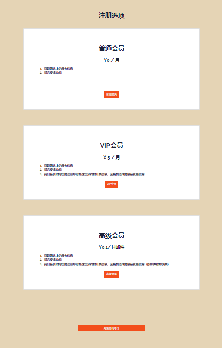

Qualitative + Quantitative Test
Currently, there is no platform dedicated to providing fans with information on activities related to ACGN Influencers. The proposed solution aims to provide users with timely VIP ticket buying reminder service and event change reminder service (paid subscription based). To further narrow the scope, the geographical location that has been targeted for a pilot market entry evaluation is “Beijing北京”. Nonetheless, further validation of critical assumptions of what can make customers be willing to pay for the services and come back regularly has to be conducted as follows.
Usability Test
Five usability tasks were designed to test:
Task-1: Where would you click to get information?
Task-2: How would you get more details and what details would you get?
Task-3: Choose a register type and register.
Task-4: Login.
Task-5: Make an appointment.
Four post-test questions were also designed to obtain recommendations for improvement:
1- Please rate the overall process: 5 as very satisfied, 1 as very dissatisfied.
2- How do you think the website can be improved?
3- How do you think the subscription page can be improved?
4- Are you willing to pay for these services?
A/B test:
At first, users are designed to choose a registration type first before registering. When doing the usability test, some participants suggested that this website should allow users register first before considering whether they want to pay or not. And 5 yuan per months for this service is a little expensive. Because Beijing doesn’t have ACGN exhibition every month.
In the A/B test, this website will provide another registration type for users. And user can register as normal member first before choosing the registration types.

Original Version: On the registration page, users need to register first. And there are only two types to choose: VIP (5yuan/month), normal (free).
You can find out more about this topic in JOURNAL 5.